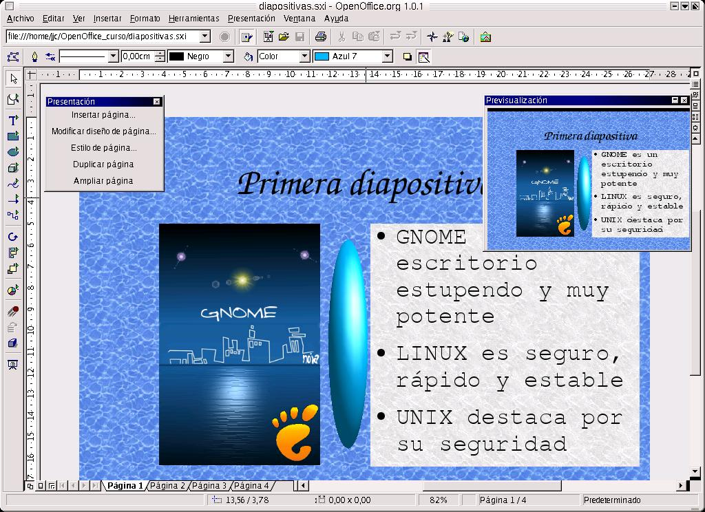
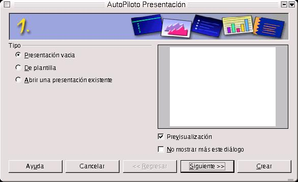
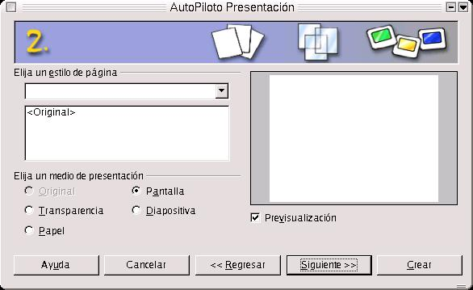
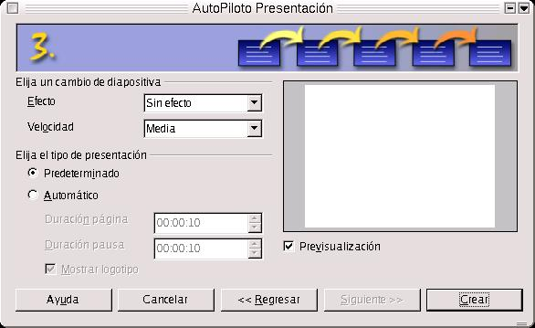
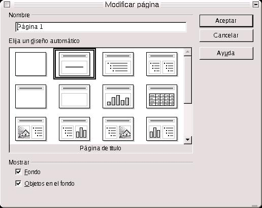
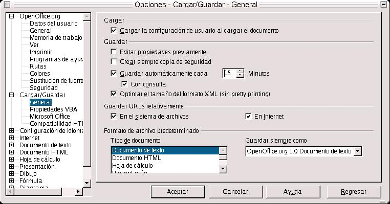

| Herramientas en GNU/LINUX para estudiantes universitarios: La suitte ofimática OpenOffice.org 1.0.1 | ||
|---|---|---|
| Anterior | Siguiente | |
Podemos definir a OpenOffice.org Impress como la herramienta incluída dentro del paquete OpenOffice, que tiene como misión la creación de presentaciones multimedia con efectos escpeciales, animaciones y sonido.
Dichas presentaciones pueden ser después visualizadas en Microsoft Power Point, ya que puedo guardarlas en dicho formato. Además puedo abrir presentaciones de Power Point.
El entorno de trabajo es el siguiente:

Cuando ejecutamos Impress, se despliega por defecto la ventana de AutoPiloto Presentación. Es aquí donde le diremos lo que deseamos hacer: crear una presentación vacía o una con plantilla o abrir una existente.

A su vez, podemos indicar en la casilla de verificación Previsualización, si deseamos que las plantillas de presentaciones se visualicen en un pequeño cuadro. Podemos también indicar en la casilla No mostrar más éste diálogo, si deseamos que no aparezca las próximas veces.
Si le hemos indicado que deseamos crear una presentación vacía, al indicarlo en el anterior cuadro de diálogo, se despliega otra ventana en la que debemos indicar el estilo de página, y el medio de presentación, que puede ser original, transparencia, papel, pantalla o diapositiva.
Cuando se lo hayamos indicado, pulsamos en Presionar Siguiente, y definimos el tipo de presentación, el efecto, la velocidad, y si el evento para pasar de una página a otra va a consistir en pulsar la barra espaciadora o con un clic de ratón.

También le podemos indicar que la presentación sea automática, es decir que pase de una página a otra de forma automática, para lo cual le hemos de indicar la duración de cada página, la duración de las pausas entre diapositivas y si queremos que se muestre el logotipo de StarOffice en las pausas.

Una vez que presionamos el botón Crear, se despliega la ventana Modificar Página, en donde se asigna el nombre de la misma y se selecciona el diseño, presionando con un doble clic en el mismo o presionando en Aceptar.

Si deseamos realizar una presentación sobre una plantilla que ya está creada, seleccionamos, en lugar de presentación vacía, Plantilla y Aceptar. Nos aparece una ventana, en la cual se nos indica que hemos de seleccionar un estilo de página, y el medio de presentación. Una vez que hemos hecho esto presionamos en el botón Siguiente. Definimos el tipo de presentación: efecto, velocidad, automático, duración de página y de las pausas. Al presionar en Siguiente, nos aparece una ventana en que se nos pide rellenar una serie de datos que son opcionales, como el nombre del creador de la prensentación, la empresa, la temática y una lista de ideas.
Si, en cambio, lo que deseamos es abrir una presentación ya creada, lo indicamos en el primer cuadro de diálogo que nos aparece. Después seleccionamos la presentación con un doble click. Pero puede ser que estemos ya trabajando con una presentación. En este caso nos vamos al Menú Archivo-->Abrir, o al botón Abrir, dentro de la barra de funciones.
Para guardar una presentación, nos vamos a Menú Archivo-->Guardar o botón Guardar de la barra de funciones. Al igual que se hizo con los documentos anteriores, podemos activar la casilla Guardar con Contraseña. Una cosa que hay que aclarar es que esta opción no protege contra escritura. Si se rompe la contraseña, entonces se podrá escribir en el documento.
Ahora bien, surge una cuestión, y es si podemos hacer que el documento se guarde de forma automática cada cierto intervalo de tiempo, con el fin de salvaguardar de cierres inesperados del sistema, los cambios que se hayan producido en el documento. La respuesta es que sí. Para ello hemos de activar la casilla Guardar Automáticamente Cada, y definir el tiempo en minutos. Para hacer esto, hemos de irnos al menú Herramientas-->Opciones-->Cargar/Guardar-->General-->Guardar Automáticamente Cada, y definir el tiempo.
